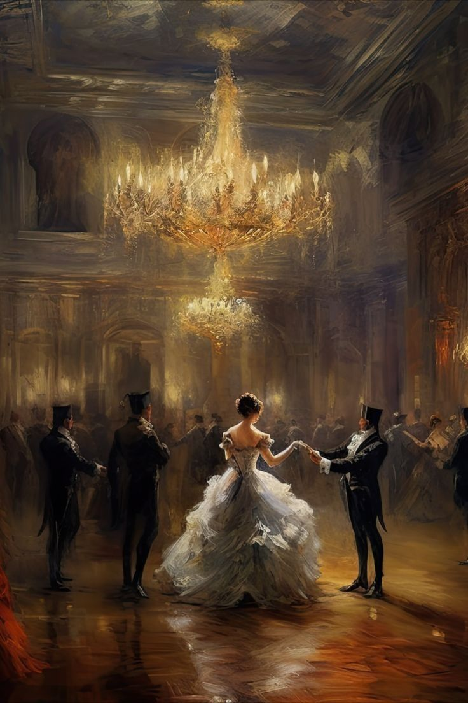
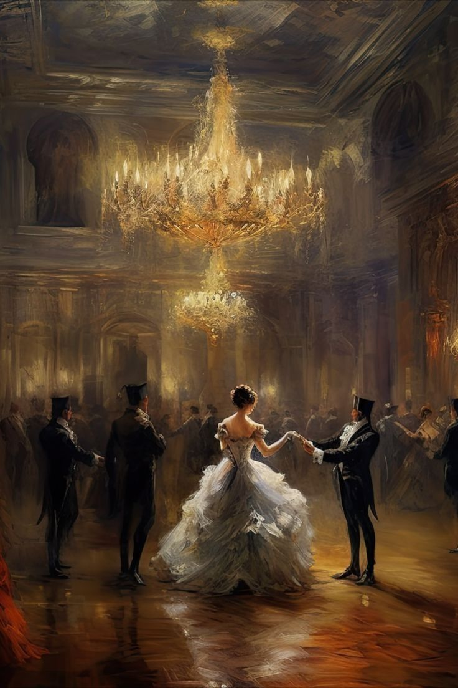
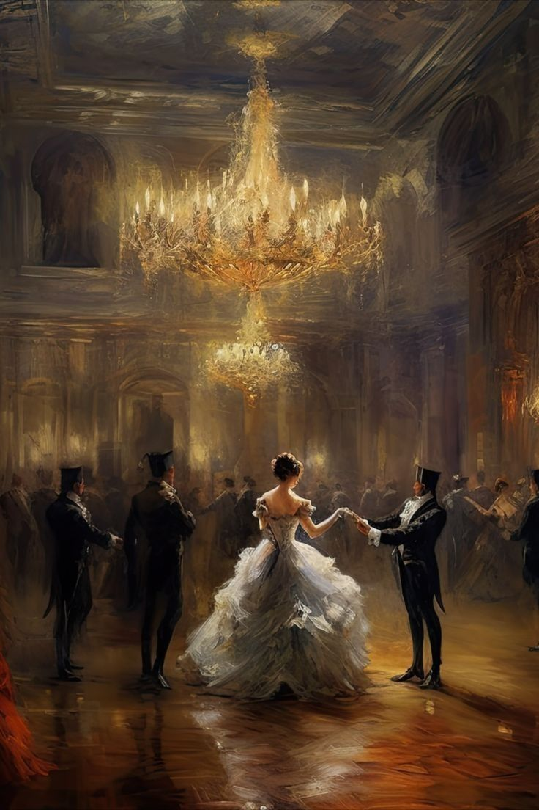
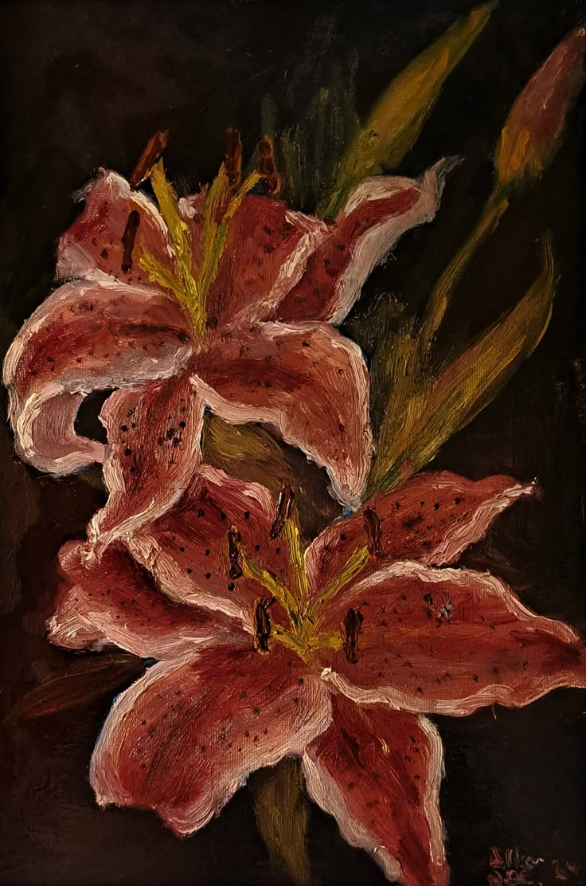

Abstract Painting
Explore the depths of imagination.
 

Hi there! I built this website leveraging Lax.js, a really lightweight and easy-to-use JavaScript library. It lets me craft these smooth, scroll-based animations you see, where elements react dynamically to your scrolling. It's ideal for making landing pages, portfolios, or any website feel truly engaging and visually captivating.experience.
Explore the depths of imagination.

Form and space redefined.

 by Classy Art.jpeg)